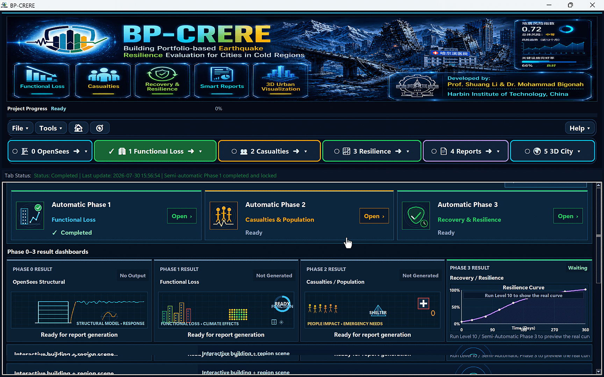
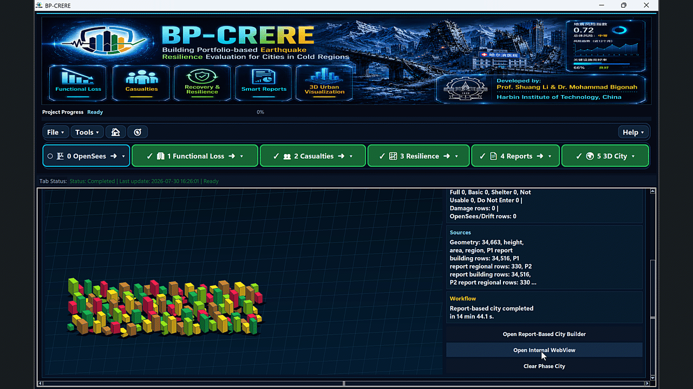

Structural response
Building inventory, ground motions and OpenSees-based analysis.
BP-CRERE connects structural response, functional loss, people impact, recovery and 3D urban intelligence in one traceable workflow for crisis-management and resilience teams.

National & regional crisis agencies
Municipal resilience offices
Critical-infrastructure owners
Engineering & research partners
Each stage carries assumptions and outputs forward, helping technical teams explain the result while decision-makers see the consequence.
Building inventory, ground motions and OpenSees-based analysis.
Usability, envelope performance and cold-region conditions.
Fatalities, injuries, displacement and emergency needs.
Repair delay, resource scenarios and resilience curves.
Executive and technical views with traceable supporting evidence.
Spatial priorities, critical facilities and regional patterns.
BP-CRERE is designed to translate engineering analysis into clear operational choices—not another isolated technical model.
Compare building and regional states to identify critical facilities and high-consequence zones.
PRIORITIZATIONBring casualties, displacement, shelter and cold-weather needs into the same assessment context.
PEOPLE-CENTRED ANALYTICSExplore how repair timing, resources and priorities influence restoration and resilience.
SCENARIO COMPARISONKeep assumptions, calculations and outputs connected for technical review and executive communication.
TRACEABLE REPORTINGAuthentic platform views show how teams move from a controlled project environment to connected assessment and city-scale interpretation.
Move through functional loss, people impact, recovery, reports and 3D city outputs while retaining project context.

Keep users, projects and assessment context organized from the start.

Explore regional results and critical facilities in a spatial decision view.
A country pilot starts with your hazard context, building stock, critical services, data availability and decision structure.
BP-CRERE is positioned as a configurable research-backed platform. Local engineering validation, institutional review and operating authorization remain part of every responsible implementation.
Define a pilot scopeLocal typologies, code assumptions, hazard scenarios and exposure data.
Hospitals, response facilities, shelters and nationally defined lifelines.
Interface labels, report vocabulary, units and local decision categories.
Online or offline workflows, data governance and organizational access.
Country pilots can map BP-CRERE outputs to the organization’s own policies and to widely used reference frameworks. These references do not imply certification or endorsement.
Risk understanding, governance, investment and recovery readiness.
Official reference ↗ INCIDENT MANAGEMENT ISO 22320:2018Roles, responsibilities, resources, joint direction and cooperation.
Official reference ↗ GEOSPATIAL EXCHANGE OGC GeoPackageAn open, portable path for exchanging geospatial information.
Official reference ↗A focused pilot creates a shared evidence base before a wider institutional or geographic rollout is considered.
Select the scenario, geography, facilities and decisions that matter.
Map local data, assumptions, terminology and governance requirements.
Run the connected workflow and review outputs with technical and operational users.
Document limitations, validation needs, adoption value and the next decision gate.
BP-CRERE supports professional judgment; it does not replace local engineering review, emergency authority or statutory decision processes.

BP-CRERE brings together structural engineering, functional resilience, people-centred impact, recovery modelling and uncertainty-aware reasoning.
The platform is developed within an academic research environment at Harbin Institute of Technology and is presented for technical collaboration, validation and pilot exploration.
Traceable modellingConnect inputs, assumptions and outputs across analysis stages.
Uncertainty-aware reasoningUse BRB-ER methods to support explainable assessment.
Decision-oriented outputsBridge technical results and executive communication.
BP-CRERE is developed by Prof. Shuang Li and Dr. Mohammad Bigonah at Harbin Institute of Technology, China.

Structural engineering · seismic resilience · AI-assisted decision support
Tell us the geography, decision context and data you have. We will prepare a focused conversation around fit, limitations and a responsible pilot pathway.
Technical reviewValidate scope, assumptions and available data.
Decision fitIdentify users, outputs and institutional requirements.
Pilot pathwayDefine a contained demonstration with explicit evaluation criteria.
No. A pilot should define how BP-CRERE complements existing systems, data governance and authority structures.
The workflow is designed for localization, but every implementation requires country-specific data mapping, engineering validation and institutional review.
The platform includes online and offline workflow options. Deployment details should be assessed against the organization’s infrastructure and security requirements.
No. It is a research-backed decision-support platform. Outputs require professional review and authorization by the responsible local institution.